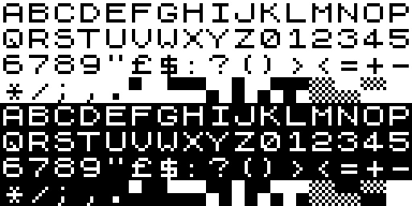

I thought I was nostalgic for ZX81 graphics but looking into it, they were even more simplistic than I remembered. This may not have been when computers peaked, after all.

I thought I was nostalgic for ZX81 graphics but looking into it, they were even more simplistic than I remembered. This may not have been when computers peaked, after all.

I would love to just have a good old Casio watch, but there are two reasons why I have a smartwatch instead:
For many years, I had a Fitbit. It did these two things very well, and I was happy.
But then four events roughly coincided in time. Firstly, Google bought Fitbit and demanded to get all my data. Secondly, I bought an iPhone Pro Max, thinking the bigger screen would make reading more pleasant than a normal-sized phone. Thirdly, London became the phone theft capital of the world and I started worrying about having my phone snatched when taking it out to skip the ads in the podcast I was listening to, or whatever. And lastly, I went to Korea and was able to buy an Apple Watch on the cheep.
That was why I decided to get an Apple Watch. I wanted a non-Google, phone-snatching-preventing iPhone remote at a discount.
I have now had my Apple Watch Series 11 for 10 months and feel there are a few things I want to get off my chest, so here’s a very honest review.
Read moreI’ve been finding Grammarly extremely useful for keeping an eye on my grammar when I write. However, once my half-price offer ended, it’s just way too expensive for what it is.
For that reason, I’m now trying LanguageTool instead. I’ll let you know how it goes.
London Graphic Centre suddenly have a lot of Japanese stationery in store, including my favourite sticky dots from Stalogy.
It was hard not to buy anything, but I had to stay strong as I’ll be going to Tokyo in the autumn.
🔜 🇯🇵

Last night in Canary Wharf
When it comes to finances, I subscribe to the idea that automation is how to make it easy to stay on top of things. I just don’t have the will to track every expense or go through account statements.
Over time, I have fine-tuned a system that I find makes it really easy for me to stay on top of things without thinking, avoiding my expenses ballooning or me wondering at the end of the month where all the money went.
The main ideas are:

I’m happy to see how this blog project seems to be surviving so far, two and a half months in.
The whole thing started as an impulse and an AI prompt about me missing personal blogs and when the Internet was free from slop and ads.
The AI helped me build the platform, and I have semi-regularly been filling it with short journal posts, photos and random thoughts. This is the 44th post, excluding the very shortest notes.
I haven’t actually shared the blog address with anyone and the traffic is very low. Tbh, that’s quite liberating! I can post whatever I feel like, without worrying about whether anyone will find it interesting or whether it is “on brand” or whatever.
Because that’s the whole point of this blog. It’s mine. It’s a manually curated feed of my life and interests. By me, for me. There are no retweets and no like button for anyone to press and no sense of failure when they don’t.
It’s just me putting my notes on my wall. If anyone happens to walk past and see them, that’s cool, but it’s not the main purpose.

Getting my JNCO jeans the other week made me think of this picture of me back in the day.
There’s not a lot of picture evidence, but while in uni, I was basically the guy in Pretty Fly for a White Guy.
I wish so much I kept that Fubu jersey!
One downside of having my life packed in boxes at the moment is straining my back from moving the boxes around to get something out! 😖

I might be a bit old-fashioned, but I quite like McDonald’s.
My wish list is a list of the things I crave, but I put off buying. Maybe they are a bit on the expensive side, or I’m not sure whether the desire will blow over. Or I’m just savouring the anticipation.
Here’s the current list:
TOYO Cantilever Toolbox ST-350 MG (Moss Green)
One of the things I want to do when I move next is to put together a well-thought-through toolbox, instead of the random bits and bobs I’ve accumulated over the years. The first step is, of course, the toolbox itself, and TOYO make the best one, imho.
Apple AirPods Max 2 (Midnight)
My noise-cancelling over-ear Bose headphones have ended up in the office, and the in-ear AirPods replacing them at home and out and about are not isolating enough when I travel or when the husband is taking work meetings at home.
Lego The Endurance
I was a massive Lego fan as a kid, and I still am, even if I’m a rather infrequent builder these days. The last time was a bonsai tree for my desk at work, but now I have my eyes set on a nice-looking ship model for my desk at home, once I move.
Carhartt WIP dungarees (black rinsed)
I’ve always had a thing for dungarees. I really like the look of them on top of a hoodie or a white tee. Right now, though, the pair I have aren’t getting much wear, so I think it would be a good move to get a pair of my favourite black Carhartt WIP dungarees instead.
The future model of iPad Mini
For many years, I didn’t have a laptop and just used an iPad for everything. I do love the MacBook Air that eventually replaced it, but there are times when I miss the iPad’s simplicity. Not least in my EDC, so I don’t have to wear my backpack. I’m therefore quite tempted to get an iPad Mini, but the current model feels a bit old, so I’m waiting to see what happens.

Too often, I get my phone out to make a quick note, and then I get distracted by something on the screen and forget the thing I was going to write down in the first place. That’s why I try to reduce the distractions on my phone as much as I can. I allow notifications from only the bare minimum of applications, and have reduced the number of visible apps and widgets to remove the clutter.
Here’s what my setup looks like.
Read more